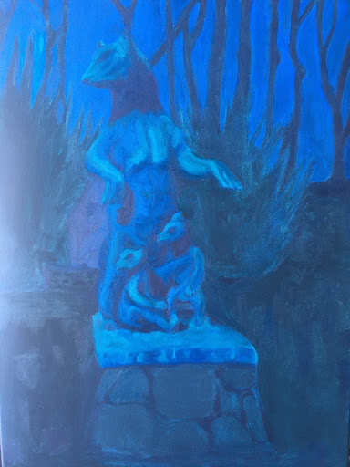
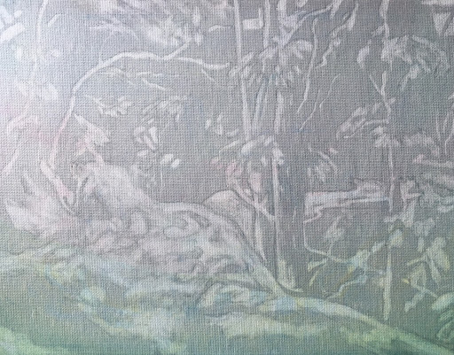
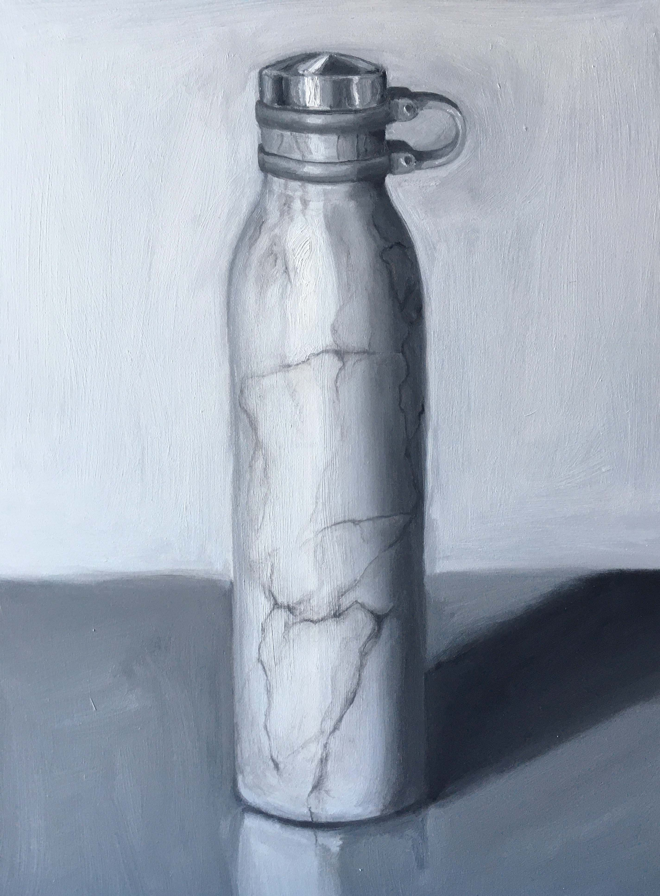
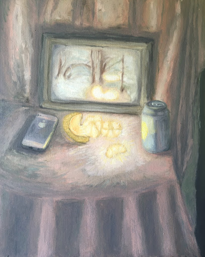
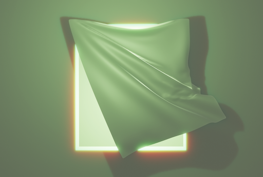
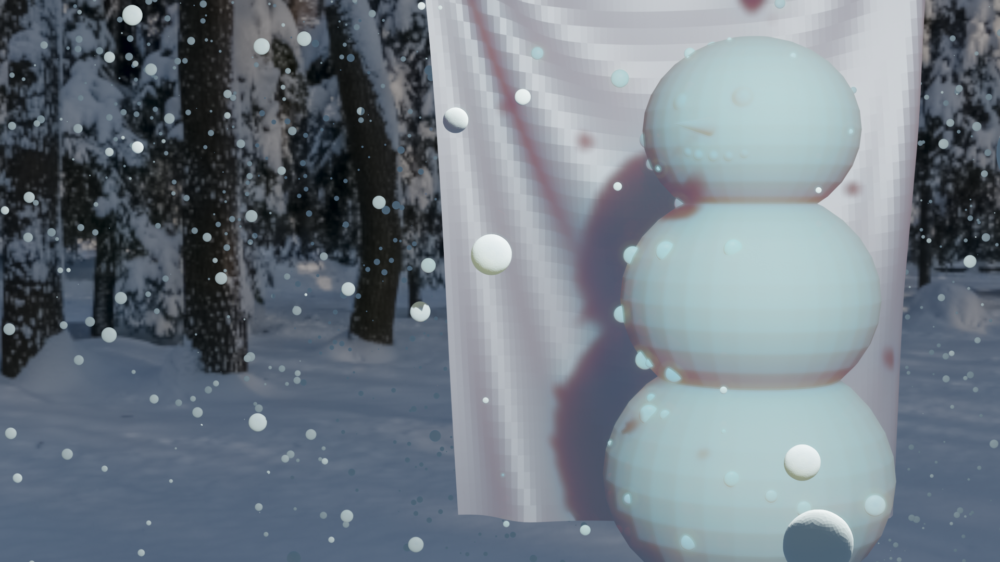
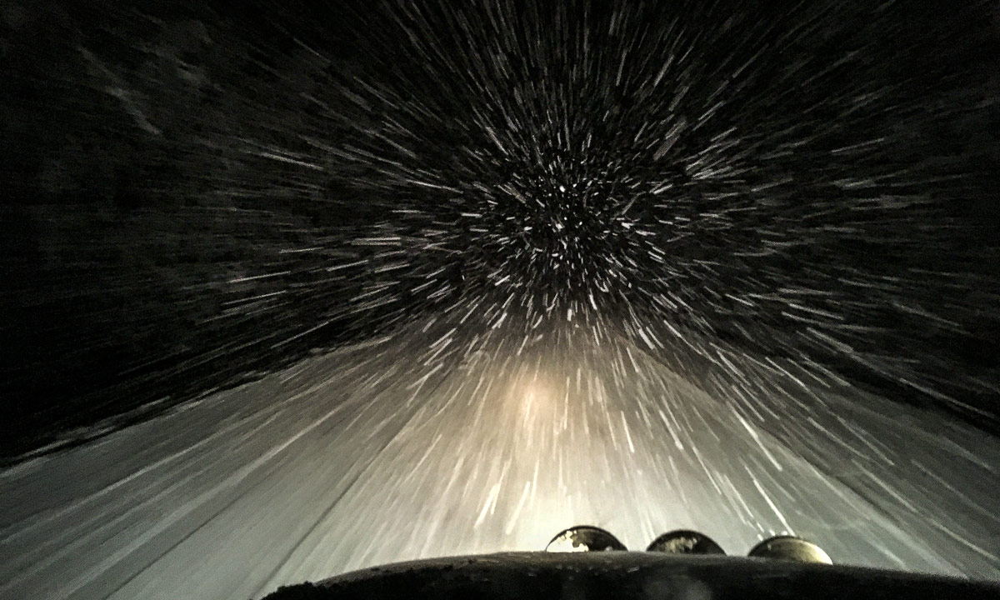
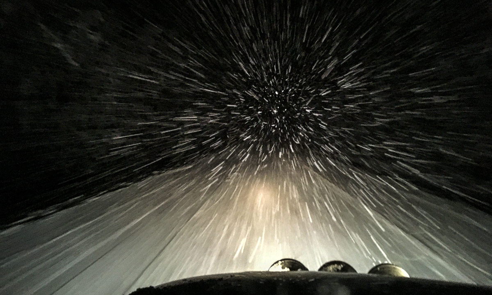

THIS PAGE IS UNDER CONSTRUCTION Fall 2020. I've decided to start an observational painting practice to be more present in my life. :)
observation and light: not the thing but my perception of the thing, how else to show this vigal relationship?
the idea of the nocturne and low light
From "What is it like to be a bat?" by Thomas Nagel. The perceptual experience of a bat is inaccesable to human consciousness. This distance creates a fantasy of a different kind of seeing we will never see.
"From plates and text, we learn that the perceptual world of the Eskimo is quite different from our own, and that an important feature of this difference is the Eskimo's use of his senses to orient himself in space. At times in the Arctic there is no horizon separating earth from sky. ... The direction and the smell of the wind, together with the feel of ice and snow under his feet, provide the cues that enable an Eskimo to travel a hundred or more miles across visually undifferentiated waste. The Aivilik have at least twelve different terms for various winds. THey integrate time and space as one thing and live in acoustic-olfactory space, rather than visual space. Furthermore, representation of their visual world are like X rays. Their artists put in everything they know is there whether they can see it or not. A drawing or engraving of a man hunting seal on an ice floe will show not only what is on top of the ice (the hunter and his dogs) but what is underneath as well (the seal approaching his breathing hole to fill his lungs with air)." From Edward T. Hall's 'The Hidden Dimension' 79-80
April 2020. "Yule Log" on wood panel. Idea of physical versus visual warmth, history of televised Yule Log.
October 2020. I did not finish. The first sculpture I ever loved in a park near my childhood home. Gaze of the bears, idea of the nocturne.
October 2020. Quick sketch. Put down oil and then removed from the surface to create an image. Copied a painting in my house that I grew up with, that I had a specific relationship to. Idea of representation of the memory of an image (negative process of removal, rather then positive).
October 2020. "Column", Oil on panel. Ideas: perceptual dissonance between different materials in a single image: of oil paint, marble, and a plastic water bottle. The wavering contour line and allowing the brush / atmospheric light to push the form of the bottle in various directions.
"Illuminated Clementine". Olfactory illumation rather than visual illumination. Stopping the iphone from being the producer of light, only able to recieve light. Various conceptualizations of fruits: lemon water, Apple inc., and a clementine. Illumination of forgrounded photograph, almost like a TV screen (again, technological light versus natural light versus 'inner' light), of the first painting I loved which I grew up in my house.
STUDY. I've begun to incorporate Blender into my observational practice, as I am interested in how blender generates physical concepts like light, wind, cloth, etc. In this painting, I will be comparing this interst to the windows in my childhood bedroom, and the wallpaper I grew up with. I've become fixated with the light which comes in from the windows while I try to fall asleep. I always saw a sad dog in the wallpaper, even though it's just random florals. My mom loves this faded green color and it's everywhere in the house. The glowing green light reminds me of home.

 

STUDY. Beginning to think about painting the physical qualities of falling snow. I've played around with animating falling snow in blender. I'm also thinking about how snow lifts over a car, and makes everything look like hyperspeed. I have a nice memory of driving with my dad to a hockey game a noticing this when I was young, I think about it alot still.